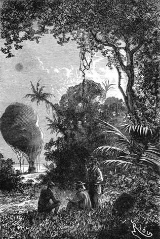

Děsné vedro. – Přeludy. – Poslední krůpěje vody. – Zoufalá noc. – Samovražedný pokus. – Samum. – Oasa. – Lev a lvice.
Nazejtří bylo první starostí doktorovou podívati se na tlako měr. Postřehl stěží na rtuťovém sloupci klesnutí zcela nepatrné.
„Nic!“ pravil si, „nic!“
Vylezl z loďky a zkoumal povětrnost; totéž horko, tatáž jasnost, tatáž nepohnutost.
„Což si musíme zoufat?“ zvolal.
Joe ani nehlesl, jsa zabrán v myšlenky a obíraje se svým zámyslem výzkumným.
Kennedy vstal, jsa silně churav a zmítán znepokojivou předrážděností. Trpěl strašlivě žízní. Opuchlý jeho jazyk a rty sotva byly s to, aby vydaly ze sebe zvuk.
Zbývalo ještě několik kapek vody; každý to věděl, každý na ně myslil, každého to k ní pudilo; leč nikdo neodvážil se hnouti ani na krok.
Tito tři soudruzi, tito tři přátelé pohlíželi na sebe vyděšenýma očima, s pocitem zvířecí lačnosti, která se jevila zvláště na Kennedyovi; jeho mohutné ústrojí podléhalo rychleji těmto nesnesitelným újmám; po všechen den nevyšel z horečného třeštění; chodil sem a tam, vyrážeje ze sebe chraplavé výkřiky, hryza se v pěsti, jsa hotov prokousati si žíly, aby se napil krve.
„Ha!“ zvolal, „země žízně! budeš brzy nazvána zemí zoufalství!“
Po té byl zachvácen úplnou bezvládností; bylo slyšeti toliko sípání jeho dechu mezi naběhlými rty.
K večeru připadl rovněž na Joa blouznivý záchvat; širá ta písečná oasa zdála se mu býti nesmírným rybníkem s čistou, jasnou vodou; nejednou vrhl se na tu rozpálenou půdu, aby se napil, a vstal zase, maje ústa plná prachu.
„Hrom a peklo!“ zvolal hněvivě, „vždyť je ta voda slaná!“
V tom pak, zatím co Fergusson a Kennedy leželi bez hnutí, jala se ho neodolatelná myšlenka, aby vypil těch několik krůpějí vody, ještě v zásobě jsoucích. Byla silnější než on; zamířil k loďce, šoupaje se po kolenou, vyhledal očima láhev, chovající v sobě ten mok, mrštil po něm chtivým pohledem, a uchopiv láhev, povznesl ji ke rtům.
Tu zaslechl tato slova srdcervoucím hlasem pronesená:
„Pít! pít!“
Byl to Kennedy, jenž se k němu vlekl; nešťastník budil útrpnost, prose s pláčem na kolenou.
Joe, pláče rovněž, podal mu láhev, a Kennedy vypil obsah její do poslední kapky.
„Díky!“ pravil.
Avšak Joe ho neslyšel; svalil se jak on na písek.
Co se dálo za této strašlivé noci, neví se. Leč v úterý ráno cítili nešťastníci, jak se jim údy ponenáhlu vysušují v té ohnivé záplavě, ze slunce se linoucí. Když chtěl Joe povstati, nebyl s to; nemohl vykonati svůj záměr.
Rozhlédl se kolem sebe. V loďce seděl malátně doktor s pažema na hrudi přeloženýma, zíraje do prázdna s blbou utkvělostí na nějakou domnělou věc. Z Kennedye šla hrůza; kýval hlavou se strany na stranu jako dravec v kleci.
Najednou spočinuly zraky lovcovy na jeho karabině, jejíž pažba čněla nad kraj loďky.
„Ha!“ vykřikl povstav s nadlidským úsilím.
Jsa pomaten, šílen vrhl se na zbraň a zamířil si její hlaveň do úst.
„Pane! pane!“ zvolal Joe přiskočiv k němu.
„Nech mne! jdi,“ chraptěl Skot.
Oba zápasili spolu zuřivě.
„Pusť, sic tě zabiju!“ křičel Kennedy.
Ale Joe mocně se naň upínal; takto zápolili skoro minutu, aniž si jich doktor povšiml, jak se zdálo; v půtce karabina náhle spustila; uslyšev třesk doktor vstal přímo jako duch; díval se kolem sebe. Avšak z čista jasna zjaří se jeho zraky, ruka jeho vztáhne se k obzoru, i zvolá hlasem, jenž neměl už nic lidského do sebe:
„Tam! tam! tam! dole!“
V jeho posunku jevila se taková ráznost, že Joe a Kennedy se pustili a oba se podívali.
Pláň zmítala se jako rozvzteklené moře v čas bouře; písečné vlny vzdouvaly se jedna nad druhou prostřed hustého prachu; od jihovýchodu přicházel ohromný sloup, kolotaje se s úžasnou rychlostí; slunce zmizelo za neproniknutelným mrakem, jehož náramný stín sahal ak k Viktorii; zrnka jemného písku řinula se s lehkost tekutých molekul, a tento příliv mohutněl přes tu chvíli.
Rázný záblesk naděje zazářil v očích Fergussonovi.
„Samum!“ zvolal.
„Samum!“ opáčil Joe nevalně rozuměje.
„Tím lépe!“ vzkřikl Kennedy se zoufalým vztekem, „tím lépe! umřeme!“
„Tím lépe!“ odvětil doktor, „budeme naopak žít!“
Jal se chvatně vyhazovati písek, jímž byla loďka obtěžkána.
Jeho druzi pochopivše konečně přispěli mu pomocí a usedli po jeho boku.
„A teď, Joe,“ vece doktor, „vyhoď mi asi padesát liber té zlaté rudy!“
Joe učinil tak neváhaje a přece pocítil cosi jako prchavou lítost. Balon se vznesl.
„Byl čas!“ zvolal doktor.
Samum přihnal se vskutku rychle jako blesk. Kdyby se byli o chvilku opozdili, byla by Viktorie bývala rozdrcena, na kousky rozervána, nadobro zničena. Uchvátilať ji náramná smršť; byla zasypána deštěm písku.
„Ještě přítěž!“ vzkřikl doktor na Joa.
„Už,“ odpověděl Joe svrhnuv těžký kus křemene.
Viktorie vystoupila rychle nad smršť, avšak octnuvši se v ohromném proudě vzduchovém, byla unášena s nevypočitatelnou rychlostí nad tím kolotavým mořem. Samuel, Dick a Joe nemluvili; dívali se a doufali, jsouce mimo to poobčerstveni větrem tohoto víru. Ve tři hodiny vichr se ztišil; písek, opět na zemi padaje, utvořil nesčíslný počet kopců; obloha nabyla zase dřívějšího klidu.
Viktorie stanuvši opět vznášela se u úvozu oasy, ostrova porostlého zeleným stromovím a vyvstalého nad hladinou tohoto okeanu.
„Voda! voda je tam!“ zvolal doktor.
Otevřel ihned vrchní záklopku, a vypouštěje vodík, snesl se zvolna na dvě stě krokův od oasy.
Za čtyři hodiny byli cestovatelé urazili vzdálenost tří set osmdesáti kilometrů.
Za chvilku uvedena loďka v rovnováhu a Kennedy vyskočil na zemi, maje v zápětí Joa.
„Vezměte ručnice!“ zvolal doktor, „vezměte ručnice a buďtež obezřelí.“
Dick uchvátil svou karabinu, a Joe vybral si namátkou jednu z ručnic. Zamířili rychle ke stromům a zabrali se pod tento svěží zelený krov, jenž jim zvěstoval hojné prameny; nevšimli si širokých tlapějí, čerstvých stop, které se tu a tam jevily ve vlhké půdě.
Najednou rozlehl se zářev na dvacet krokův od nich.
„To zařval lev!“ pravil Joe.
„Tím lépe!“ odtušil rozjitřený lovec, „budeme se bít! Člověk je silný, když nejde o nic jiného, než aby se bil.“
„Opatrně, pane Dicku, jen opatrně! na životě jednoho závisí život všech.“
Ale Kennedy ho neposlouchal; bral se dále s planoucíma očima a s karabinou u líce, jsa hrozný ve své odvaze. Pod palmou krčil se obrovský lev s černou hřívou v útočném postoji. Sotva zočil lovce, vymrštil se; nežli však dopadl země, stihla ho kulka do srdce; svalil se mrtev.
„Hurá! hurá!“ vzkřikl Joe.
Kennedy rozběhl se ke studnici, uklouzl na vlhkých stupních a upadl před čestvým pramenem, v němž smočil hltavě rty; Joe následoval jeho příkladu a pak už bylo slyšeti jen mlaskot jazykem, jako když zvířata hasí žízeň.
„Mějme se na pozoru, pane Dicku,“ řekl Joe, nabíraje dechu. „Nepijme příliš.“
Ale Dick neodpovídaje pil dále. Ponořil si hlavu i ruce do blahodějné vody; opíjel se.
„A pan Fergusson?“ ozval se Joe.
Toto jediné slovo vrátilo Kennedyovi smysly; naplnil láhev, kterou přinesl s sebou, a obrátil se ke schodům studny. Ale jaký byl jeho úžas! Neprůhledné, obrovské tělo zavíralo její vchod. Joe, který šel za Dickem, byl nucen ucouvnouti s ním.
„Jsme zavřeni.“
„Toť nemožno! co to znamená?…“
Dick nedopověděl; strašlivý zářev zvěstoval mu, s jakým novým nepřítelem jest mu činiti.
„Druhý lev!“ zvolal Joe.
„Nikoli, nýbrž lvice! Ha! prokletá šelmo, počkej,“ pravil lovec, nabíjeje chvatně karabinu.
V druhém okamžiku vystřelil, ale dravec zmizel.
„Ku předu!“ vzkřikl.
„Ne, pane Dicku, ne, neusmrtil jste ji rázem; její tělo bylo by se svalilo až sem; je hotova skočiti na prvního z nás, který se ukáže, a po tom je veta!“

Večer byl rozkošný a minul ve svěžím chládku.
„Ale co počít? Vyjít musíme. Vždyť Samuel na nás čeká!“
„Přilákejme šelmu; vezměte mou ručnici a dejte mi svou karabinu.“
„Co zamýšlíš?“
„Uvidíte.“
Joe svlékl plátěnou kazajku, ovinul ji na konec hlavně a vystrčil nad otvor jako vnadu. Rozlícená šelma vrhla se na ni; Kennedy stál u schodů na číhané a roztříštil jí kulí lopatku. Lvice svalila se řvouc na stupně a porazila Joa. Když se hodný jonák již již domníval, že obrovské tlapy zvířete naň dopadají, zahučela druhá rána a v otvoru objevil se doktor Fergusson, drže v ruce pušku, z níž se ještě kouřilo.
Joe povstal rychle, překročil tělo šelmino a podal pánovi láhev s vodou.
Povznésti ji ke rtům a napolo vyprázdniti bylo Fergussonovi činem okamžiku, a tři cestovatelé děkovali z nejhlubších útrob Prozřetelnosti, která je tak zázračně zachránila.